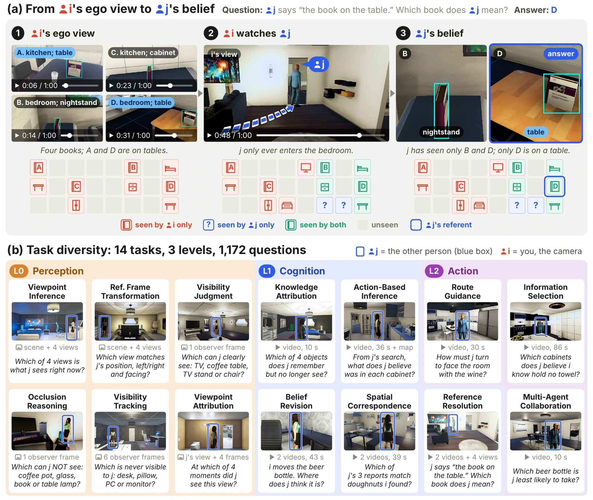

SpatialToM: Modeling Multi-Agent Theory of Mind for Embodied Spatial Intelligence
* Equal contribution

Abstract
Spatial intelligence is not merely egocentric, but fundamentally intersubjective: it emerges where our perceived world and the unseen worlds of other agents seamlessly interlock. We introduce SpatialToM, a benchmark for embodied spatial theory of mind, where agents must reconstruct others’ mental states from spatial perspectives, observation histories, and goal-directed actions. SpatialToM organizes 14 task types into three hierarchical tiers: (L0) Perception, reasoning about perspective and visibility; (L1) Cognition, attributing and integrating others’ knowledge and beliefs; and (L2) Action, leveraging these inferences for guidance and multi-agent coordination. Built in VirtualHome, SpatialToM comprises 1,172 questions grounded in agents’ distinct perceptual, cognitive and active experiences. Evaluation of state-of-the-art VLMs reveals that explicit memory and denser observations offer selective gains in spatial grounding and knowledge attribution, but remain vulnerable to perceptual errors and belief reconstruction failures. Oracle physical records improve accuracy from 61.1% to 87.1%, yet models still struggle with belief uncertainty, spatial-temporal reasoning, and collaborative actions. These findings expose a gap between perceiving the world and understanding the minds that inhabit it.